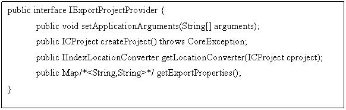
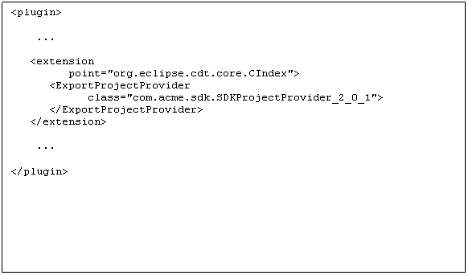
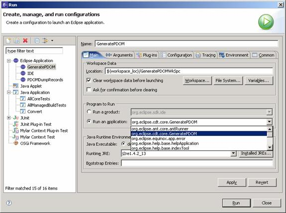
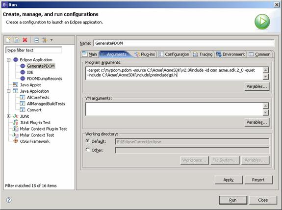
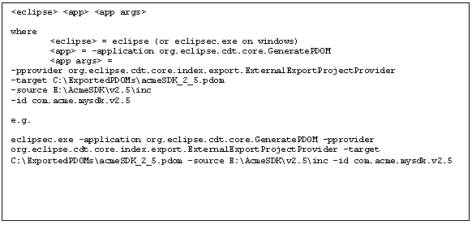
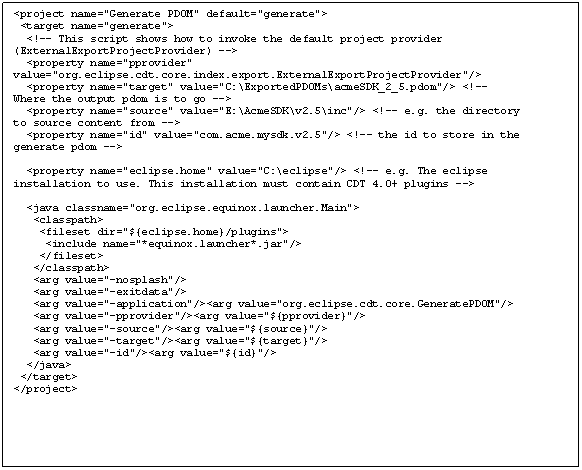
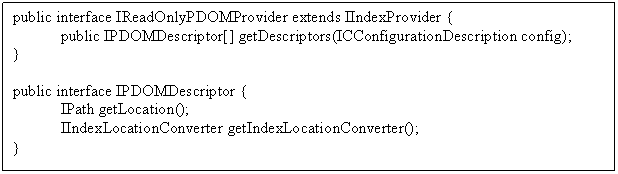
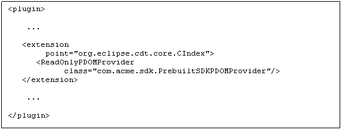

ExternalExportProjectProvider
command-line options
Invoking the GeneratePDOM application
Invoking
as a self-hosted eclipse application
This document describes two extension points used for generating reusable index content, and for adding this content into a CDT 4.0 based environment. The intended audience is ISVs who are looking to build indexes of libraries or SDKs that are of interest to them and their customers, and to integrate the pre-built index information into their IDE environment. The extension points are intended to be general enough to allow ISVs to support unforeseen pre-built index content scenarios, with a set of default implementations intended to be useful for standard situations. Other sources that may be helpful are the extension point descriptions, and the central interfaces’ javadoc.
Export is performed by indexing a normal CDT project which has been setup and configured programmatically. A top-level summary of the steps needed is:
(1) Write a class that can setup your index content as a CDT project, and register it against an extension point. For simple libraries/SDKs the default implementation can be used.
(2) Invoke the GeneratePDOM application from the command-line. This involves invoking eclipse from an eclipse installation with the CDT 4.0 plug-ins, and the plug-in containing the project generation code from step (1)
It is expected that real-world libraries and SDK’s may need complex configuration before indexing. For example, per-file macro or include settings, or excluding certain files from being indexed. In this case, it is necessary for the ISV to write code which programmatically performs this configuration. If detailed configuration is not needed then a default implementation of IExportProjectProvider may be sufficient.
The call-back for project creation must implement the following interface
org.eclipse.cdt.core.index.export.IExportProjectProviderThe skeletal form of this interface is shown below:

This interface allows any index export application to delegate the entire setting up of the project content to an ISV specific implementation. The interface javadoc describes each method in more detail but a summary is:
· setApplicationArguments – this receives any application arguments specified on the command-line. Its expected implementations will simply store the arguments for later processing by createProject.
· createProject – this is the key method which is expected to create and configure a project representing the content to be indexed
· getLocationConverter – this returns an IIndexLocationConverter which converts IIndexFileLocation objects (which represent file locations in the index) to an unspecified ISV determined internal (String) format. For convenience, an implementation which converts an IIndexFileLocation to an internal format relative path is provided
o org.eclipse.cdt.core.index.ResourceContainerRelativeLocationConverter
· getExportProperties – this allows ISV’s to associate String values with String keys within exported content. This is mostly for debugging purposes as it is not exposed to the CDT user in the 4.0 release.
A default implementation of this interface, which is also intended to be sub-classed, is org.eclipse.cdt.core.index.export.ExternalExportProjectProvider
The project provider must be registered as an extension to the org.eclipse.cdt.core.CIndex extension point under the ExportProjectProvider child element, in order that it is visible to the CDT core index generation code.

CDT 4.0 provides an eclipse command-line application for generating the index. Its application ID is:
org.eclipse.cdt.core.GeneratePDOM
This application can be invoked as any other eclipse command-line application, some examples are provided later in this document.
Command-line options common to all IExportProjectProvider implementations are:
|
-pprovider |
The fully qualified classname
of a class implementing interface IExportProjectProvider Example: -pprovider com.acme.sdk.AcmeExportProjectProvider |
Optional. Defaults to the fully qualified class name of ExternalExportProjectProvider |
|
-target |
An absolute or relative path of the resulting file |
Needed |
|
-properties <key=value> … <key=value> |
|
Optional |
|
-quiet |
If present, problems, statistics and indexer activity will be suppressed. |
Optional |
Other command-line options depend on what the project provider specified in –pprovider.
ExternalExportProjectProvider specific command-line options are:
|
-source |
The absolute path of a directory to index.
Everything under this directory will be indexed. |
Needed |
|
-include |
An absolute or relative path of a pre-include file |
Optional |
|
- id |
A namespaced identifier
identifying the indexed content |
Optional |
As an eclipse application, the GeneratePDOM application can be invoked in the normal ways that any other eclipse application can [1]. For initial development, its most convenient to invoke as a self-hosted eclipse application via a launch configuration. For integrating into an automated build, either direct command-line invocation or via an ant build is more convenient.
Running as a self-hosted eclipse application is straightforward. You will need to have the CDT 4.0 plug-ins installed, or in your workspace. Then the steps are:
1) Create a new launch configuration of type “Eclipse Application”
2) Choose “Run an application” and select “org.eclipse.cdt.core.GeneratePDOM”
3) Enter the Arguments to the application as detailed in the previous sections


The PDOM generation application can be invoked via the command-line. Since version 3.3, the Eclipse
distribution on Windows includes an “ecilpsec.exe” which is for launching eclipse as a console application.

An example script invoking the application via Ant is shown below:

Once ISV content has been generated and distributed to the user’s computer, the mechanism to have that content appear within a CDT 4.0 session is via another extension point:
org.eclipse.cdt.core.CIndex.ReadOnlyPDOMProviderAn implementation of the IReadOnlyPDOMProvider interface is registered under this extension point.
Since CDT 4.0, the project model has the concept of project configurations, which in terms of code corresponds to the interface:
org.eclipse.cdt.core.settings.model.ICConfigurationDescriptionThe index model allows content to be associated with ICConfigurationDescription objects via the CIndex.ReadOnlyPDOMProvider extension point. ISV implementations are expected to examine the specified ICConfigurationDescription object, and determine from its properties (for example, macros and include paths, or perhaps custom builder properties) which ISV content is relevant.

The interface IReadOnlyPDOMProvider allows index content contributors to register content related to a particular ICConfigurationDescription. This will be queried dynamically, so it is important to perform only inexpensive logic in this method. The resulting IPDOMDescriptor objects will be used to load PDOM format files into the logical index.
The IPDOMDescriptor consists of the absolute path of the PDOM format file, and a location converter suitable for converting from the file’s internal representation of paths to the runtime IIndexFileLocation objects used by the indexing API. The location converter must be compatible with the one used on export. Again, a default implementation is provided. If you exported your index content with org.eclipse.cdt.core.index.ResourceContainerRelativeLocationConverter then the location converter org.eclipse.cdt.core.index.URIRelativeLocationConverter is internal format compatible.
Once the provider is registered in the CDT extension point, then the pre-built index content will be available via index-based features in the IDE for the appropriate configurations.

Appendix A
package org.eclipse.cdt.core.index;
/**
* Each IIndexFragment
stores file location representations in an implementation specific manner.
* External to IIndexFragment
files are identified by an {@link IIndexFileLocation}
*
* Internal to IIndexFragment
a mechanism for converting between the string location format used
* and the URI world
is needed. This interface represents that mechanism.
*/
public interface IIndexLocationConverter
{
/**
* Convert a
raw string in an internal IIndexFragment
implementation specific format to
* an IIndexFileLocation or null if
the internal format could not be translated.
* @param raw
* @return
*/
public abstract IIndexFileLocation fromInternalFormat(String
raw);
/**
* Convert a IIndexFileLocation to the
internal IIndexFragment implementation specific
format
* or null if the location could not be translated.
* @param location
* @return an
internal representation for the location specified
*/
public abstract String toInternalFormat(IIndexFileLocation
location);
}
/*******************************************************************************
* Copyright (c) 2006 Symbian Software Ltd. and
others.
* This program and the
accompanying materials
* are made available under the terms of the
Eclipse Public License 2.0
* which accompanies
this distribution, and is available at
* https://www.eclipse.org/legal/epl-2.0/
>*
>* SPDX-License-Identifier: EPL-2.0
*
* Contributors:
*
Andrew Ferguson (Symbian) - initial API and implementation
*******************************************************************************/
package org.eclipse.cdt.core.index;
import java.net.URI;
/**
* Files in the index are (conceptually)
partitioned into workspace and non-workspace (external) files.
* Clients can obtain instances of
IIndexFileLocation implementations from {@link IndexLocationFactory}
* <p>
* This interface is not intended to be
implemented by clients.
* </p>
* <p>
*
<strong>EXPERIMENTAL</strong>. This class or interface has
been added as
* part of a work in
progress. There is no guarantee that this API will work or
* that it will remain
the same. Please do not use this API without consulting
* with the CDT team.
* </p>
*
* @since 4.0
*/
public
interface IIndexFileLocation {
/**
* The URI of the indexed file
* @return the URI of the indexed file
(non-null)
*/
public
URI getURI();
/**
* Return the workspace relative path of the
indexed file or null if the file
* is not in the workspace
* @return the workspace relative path of the
file in the index, or null if the
* file is not in
the workspace
*/
public
String getFullPath();
}